Everything on a job
In the office app, press Help and type everything on a job
: the tour plays on your own screen, with your own data.
-
 1
1Open the job
Jobs open from the Jobs list, the Schedule board, the customer or search. Let's open one.
-
2
The job at a glance
Job number, the estimate it came from, the title, address, phone and who sold it. The link above it goes back to the customer.
-
3
Work order
Prints the crew's work order: the address, each work item, the crew notes and the materials.
-
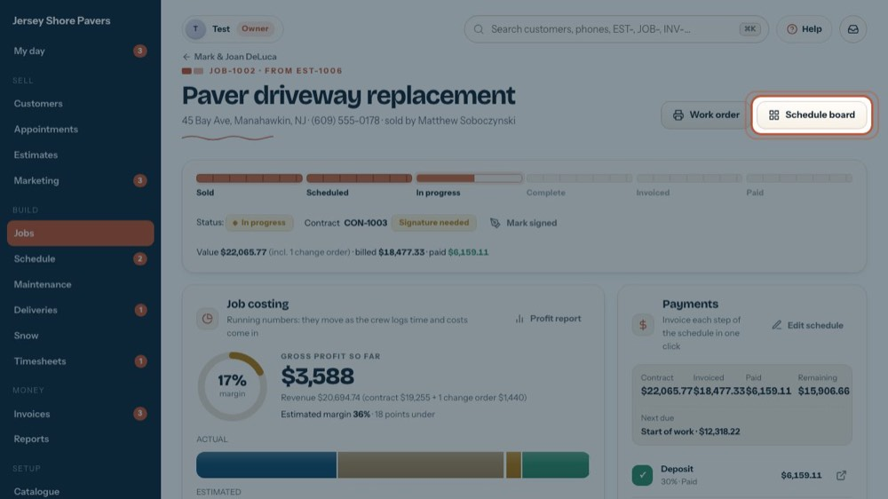
4Schedule board
Opens the board on the week this job starts.
-
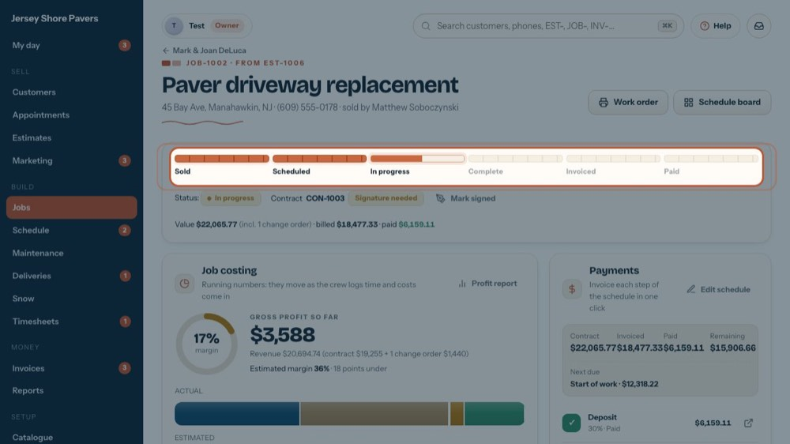
5Where the job is
Sold → Scheduled → In progress → Complete → Invoiced → Paid. It moves on by itself as work starts, finishes and is billed.
-
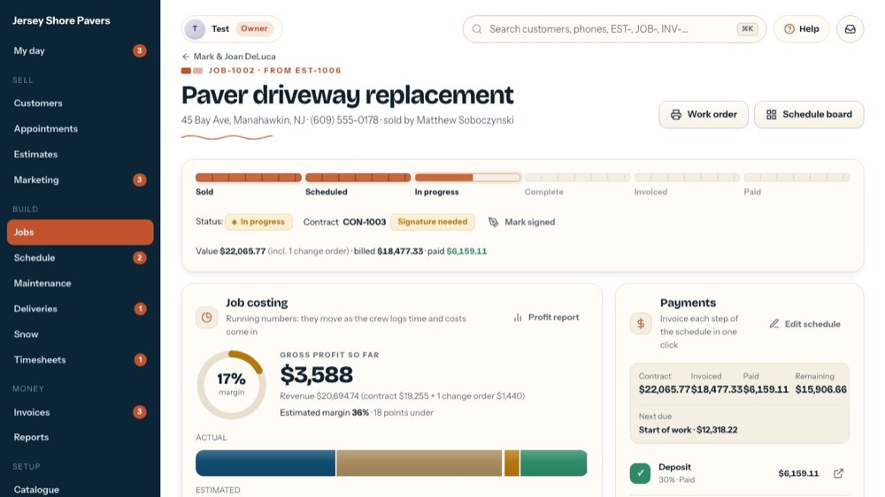
6Contract and signature
The contract number and whether it is signed. Mark signed records a paper signature (it asks first). Email signing link sends an online one when it is set up.
-
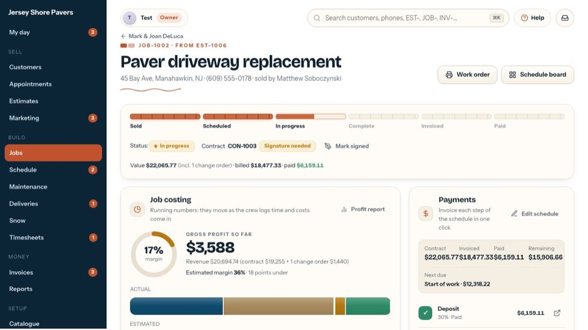
7Value, billed, paid
The contract plus approved change orders, what has been invoiced and what has been paid.
-
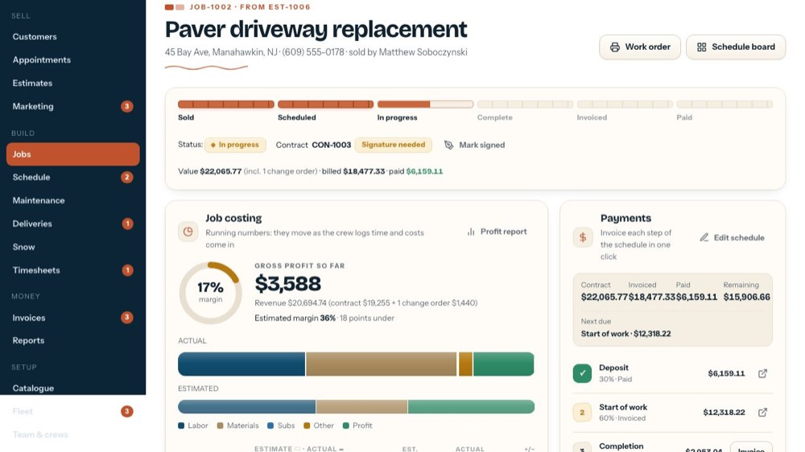
8Job costing
Is this job making money? Margin, profit so far, and estimate vs actual for hours, labor and materials. Tour: "Check a job's profit and enter its costs".
-
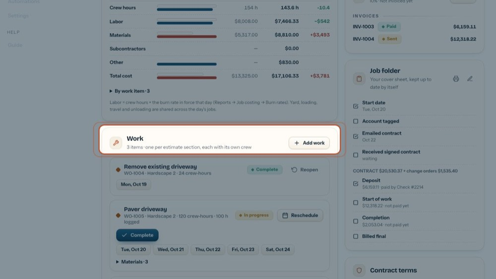
9Work
One work item per estimate section, each with its crew, hours and days. Schedule, Start and Complete are here. Tour: "Schedule, start and complete work".
-
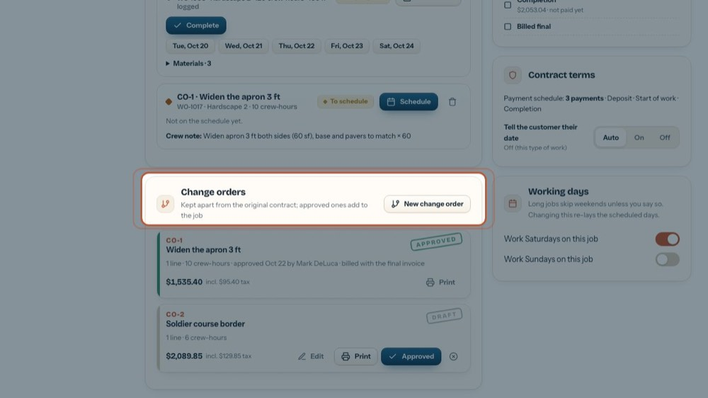
10Change orders
Extra work the customer asks for, priced and signed on its own. Approved ones become work items and add to the job's value. Tour: "Price and approve a change order".
-
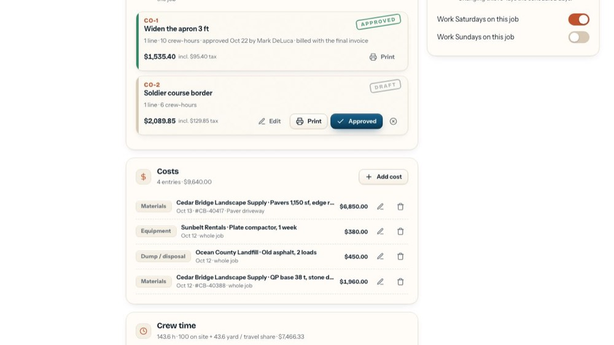
11Costs
Material bills, vendor invoices, subcontractors, equipment, dump fees and permits bought for this job. They feed the profit above.
-
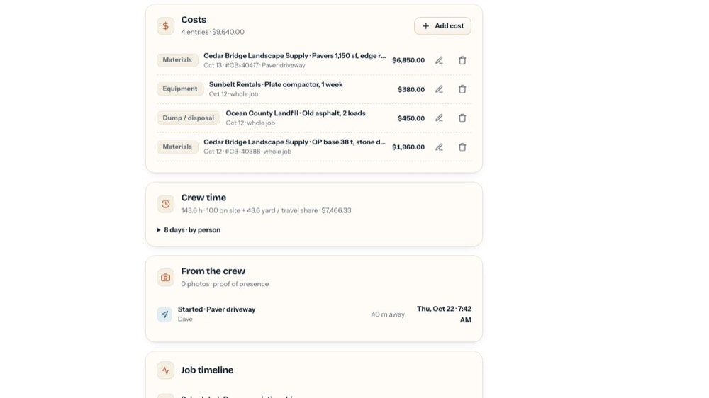
12Crew time
Each person's hours on this job, day by day: time on site plus their share of the yard, loading and travel time.
-
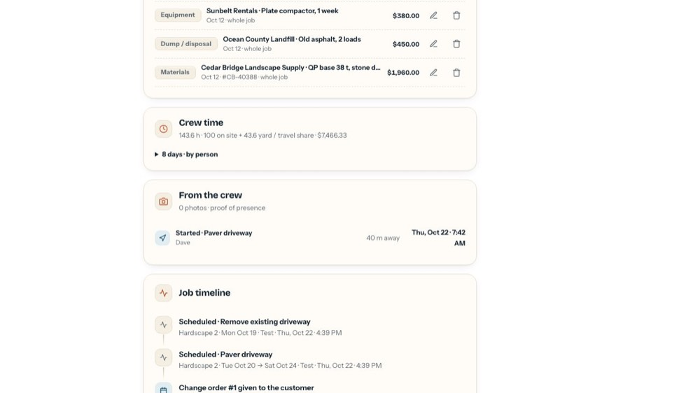
13From the crew
What the crew lead's phone recorded: start and finish with the time, photos and how far they were from the address.
-
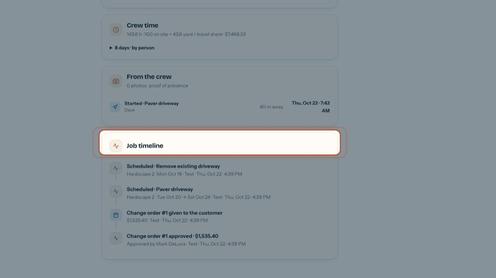
14Job timeline
Everything that happened on the job, newest first: scheduled, moved, started, change orders, invoices, payments.
-
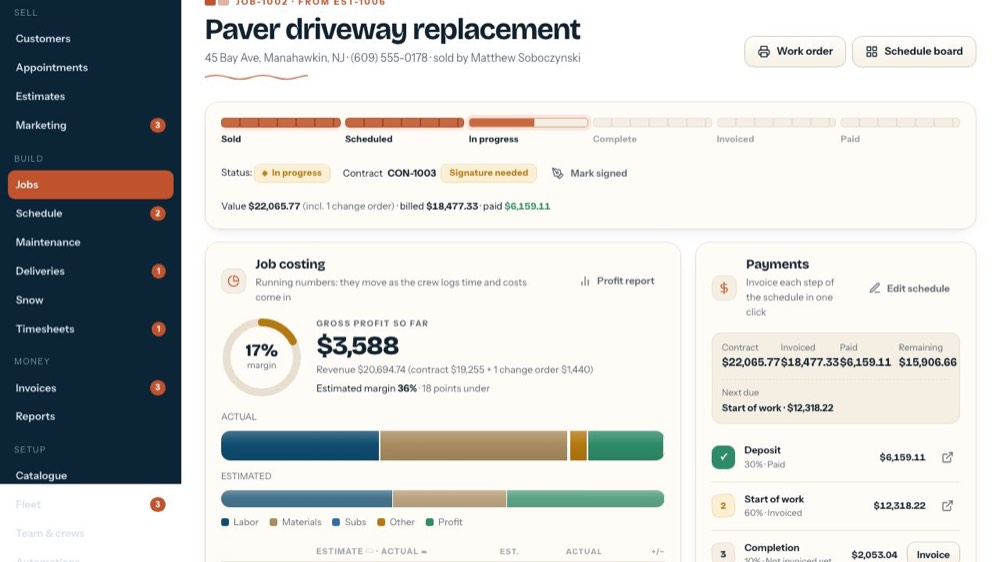
15Payments
The payment schedule: invoice each step in one click, see what is paid and what is due next. Tour: "Invoice a job's payment schedule".
-
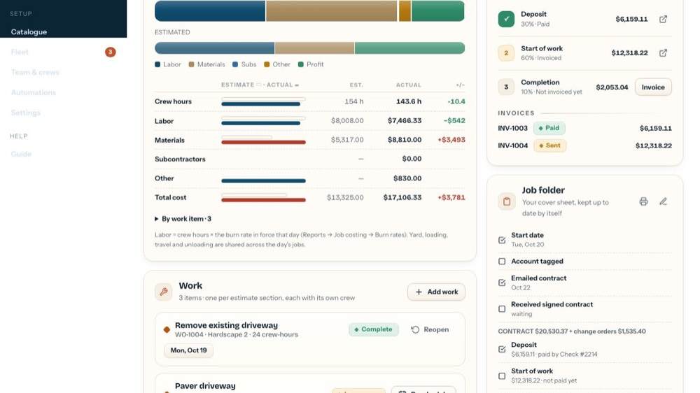
16Job folder
The paper cover sheet, ticked by itself as things happen: start date, contract emailed and signed, payments, permit, final bill, inspection.
-
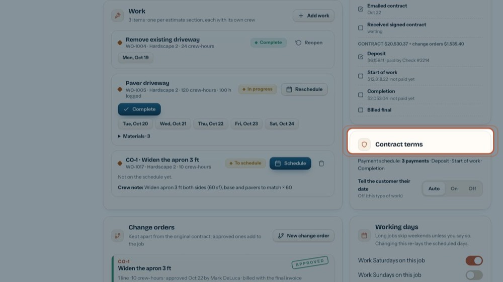
17Contract terms
The payment schedule in words, the NJ ST-8 for a capital improvement (no sales tax), and whether the customer gets "you're on the schedule" emails.
-
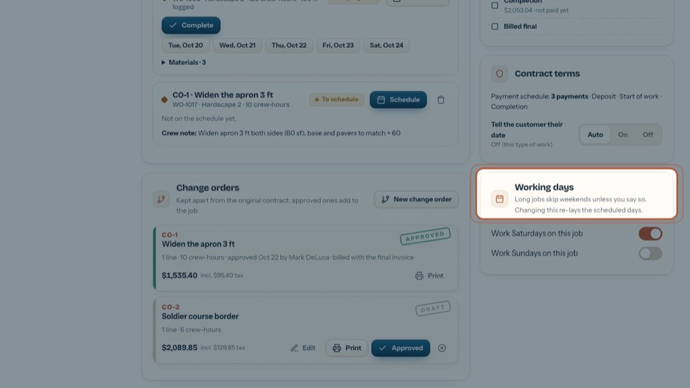
18Working days
Long jobs skip weekends unless you switch Saturdays or Sundays on for this job. Tour: "Keep the job folder, permit and terms".
-
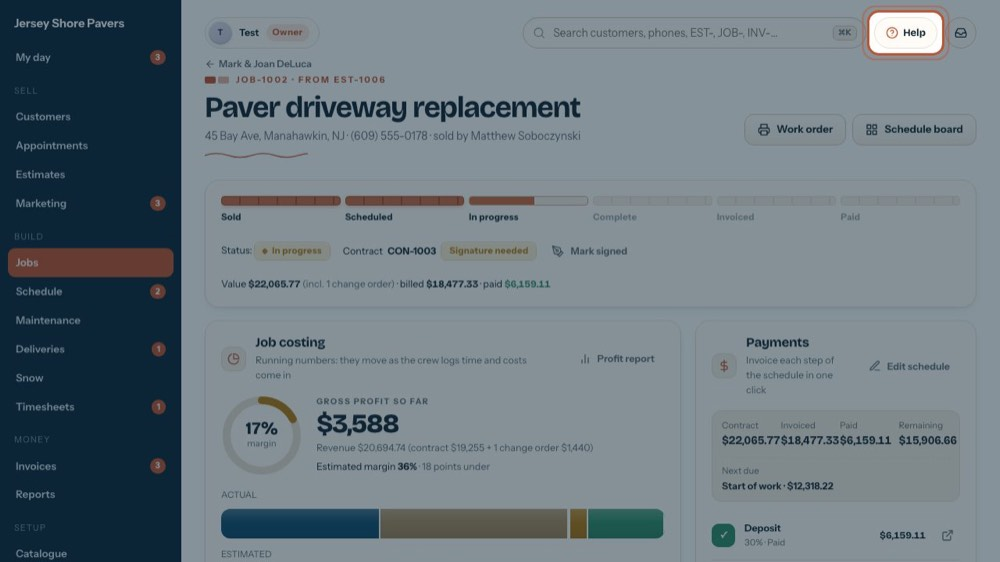
19Cards that come and go
Only when they apply: a red Permit hold banner, Maintenance plan, Bill tracked time, Material selections, Customer survey. Help lists a tour for each part of the job.